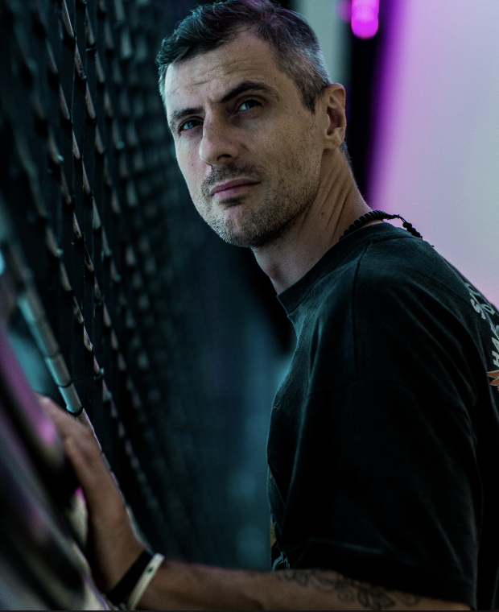
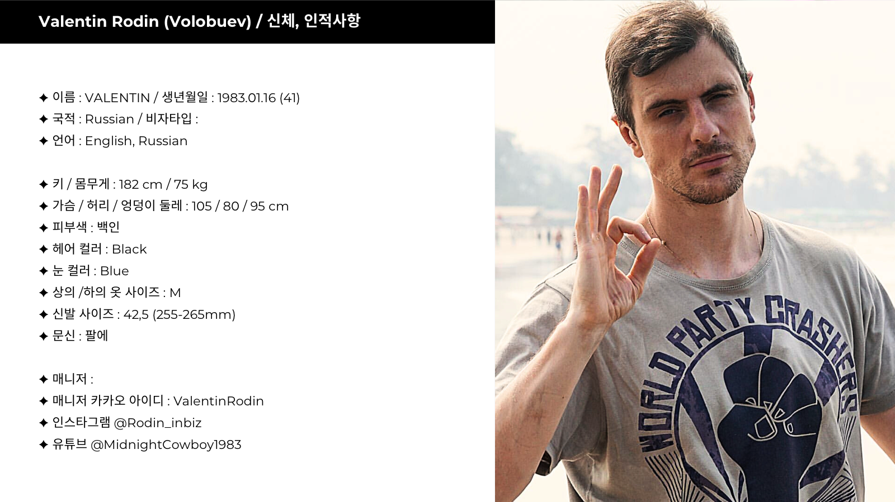

배우 · 모델 · 콘텐츠 크리에이터
Korea / Japan / China / Taiwan / Hong Kong
International actor, based in Seoul. Over a decade of on-set experience across UK, Russia, China, India, Thailand, and South Korea.
| 이름 | Valentin Rodin (Volobuev) |
| 생년월일 | 1983.01.16 (만 42세) |
| 국적 | Russian |
| 언어 | 영어 · 러시아어 · 한국어 (기초) |
| 키 / 몸무게 | 182cm / 75kg |
| 가슴 / 허리 | 105cm / 80cm |
| 상의 / 하의 | M / M |
| 신발 | 42.5 (255–265mm) |
| 헤어 / 눈 | 블랙 / 블루 |
| 문신 | 팔 (오른쪽) |
| 인스타그램 | @Rodin_inbiz |
| 유튜브 | @MidnightCowboy1983 |
| 카카오 ID | ValentinRodin |
러시아 출신의 국제 배우로, 영국·러시아·중국·인도·태국을 거쳐 현재 서울을 거점으로 활동하고 있습니다. 10년 이상의 아시아 현장 경험을 바탕으로, 다국적 제작 환경에 즉시 적응 가능한 강점을 보유하고 있습니다.
중국 최고 예산 SF 블록버스터 《유랑하는 지구》에서 우주비행사 마카로프 역으로 출연하였으며, 현재 SBS 금토드라마 《우주메리미》에서 활동 중입니다.

Valentin의 프로필을 기반으로 AI가 맞춤형 소개문 초안을 생성합니다.
드라마·광고·브랜드 협업 문의를 환영합니다.
현재 서울을 거점으로 한국 및 아시아 전역 프로젝트에 참여 가능합니다.
카카오톡 또는 인스타그램 DM으로 연락 주시면 빠르게 답변드리겠습니다.